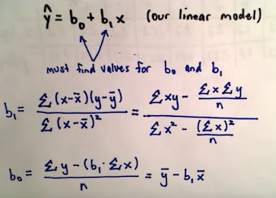

Problem Solving w/Algorithms and Data Structures
Course homeHow Fast (or slow) is an Algorithm?
Big O notation always sounds scary at first. Really, it's just a way to specify how the time it takes for an algorithm to complete is affected by the input size of the data you're working with. For example, if I wanted to add 100 different numbers and it takes time t, how will t be affected if I wanted to add 10,000 different numbers, or 1,000,000 etc. O just stands for Order of Magnitude. We use the largest order of magnitude to define the time complexity of an algorithm because all of the smaller magnitudes are inconsequential.| f(n) | Name |
|---|---|
| 1 | Constant |
| log n | Logarithmic |
| n | Linear |
| Log Linear | n log n |
| n^2 | Quadratics |
| n^3 | Cubic |
| 2^n | Exponential |
Intro. to Data Science - University of Washington
Course homeWhat is Linear Regression?
Linear Regression is about fitting a line to a plot of points.Least Squares
To find the linear regression of a set of x,y points we can go through the above calculations by hand, or (more preferably) just
import sklearn and use the built-in LinearRegression function found here.
Graphs
We can create a histogram of a graph based on the frequency of n-out-edges, that is, we count how many vertices/nodes have 0 edges coming out, 1 edge coming out, 2 edges coming out, etc. Histograms of graphs can tell use a lot about the structure. Human generated data has Zipf distribution.Connectivity coefficient is the minimum number of vertices(nodes) that are needed to be removed that will disconnect the graph. For example, in a network, if the connectivity coeffecient == 1 then someone could potentially take out only 1 machine to disconnect parts of the entire network.
Two vertices (x,y) are strongly connected if x is reachable from y and y is reachable from x.
X and Y are connected if x is reachable from y or y is reachable from x.